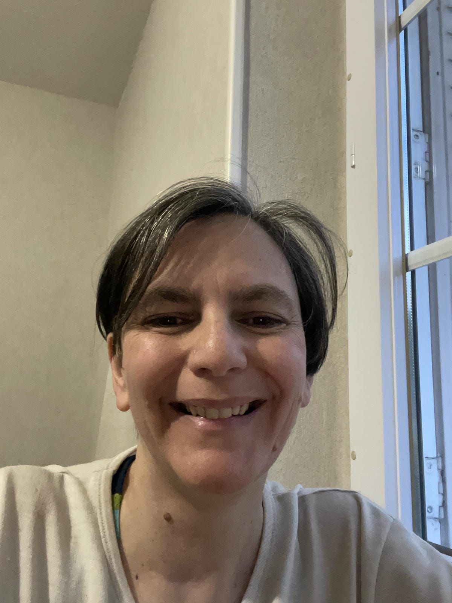
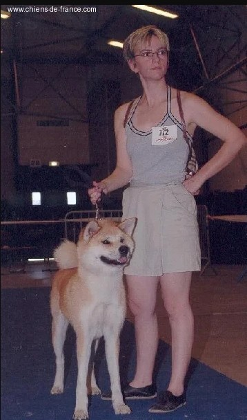

De la science à La Sortie de Survie

Pendant plus de trente ans, j'ai appris.
Pendant plus de trente ans, j'ai partagé.
Pendant plus de trente ans, j'ai transmis.
Pendant longtemps, je me suis demandé pourquoi ma vie semblait partir dans toutes les directions. La biologie. La microbiologie. La recherche. Le médical. Le pharmaceutique. L'agroalimentaire. L'élevage canin. La formation. Les neurosciences. Puis un jour, j'ai compris.
Je n'ai jamais changé de voie. J'ai toujours fait la même chose : comprendre pour mieux transmettre.
🔬 La science m'a appris à transmettre.
Mon parcours débute dans les laboratoires. Très tôt, je développe une passion pour la compréhension du vivant. Mais ce qui me plaisait tout autant que la recherche, c'était le partage. Chez Kodak Industrie, j'accompagnais déjà les stagiaires. J'expliquais les protocoles, les méthodes, les analyses. J'aimais voir quelqu'un comprendre quelque chose qui lui semblait compliqué quelques minutes auparavant. Avec le recul, je réalise que j'étais déjà dans la transmission.
🩺 Le laboratoire m'a appris l'humain.
Après la recherche, j'ai poursuivi ma carrière dans plusieurs laboratoires médicaux, pharmaceutiques et agroalimentaires. Ces environnements étaient soumis à des obligations de confidentialité. Je ne peux donc pas montrer les entreprises ni les projets sur lesquels j'ai travaillé.
En revanche, je peux dire ce qu'ils m'ont appris. La rigueur. L'analyse. La précision. L'observation. Mais surtout, le partage des connaissances.
Former un nouvel arrivant. Expliquer un protocole. Rassurer un collègue. Accompagner un stagiaire. Partager une expérience. Avec le recul, je réalise que cette envie de transmettre était déjà présente bien avant de devenir formatrice.
Je n'ai jamais seulement exercé un métier. J'ai toujours accompagné les personnes qui m'entouraient à comprendre ce qu'elles faisaient.
🐶 L'élevage canin m'a appris à transmettre autrement.

Après plusieurs années passées dans les laboratoires, j'ai choisi de créer mon propre élevage canin. Pour beaucoup, cela pouvait sembler être un changement radical. Pour moi, c'était simplement une autre façon d'exprimer la même passion : comprendre le vivant et transmettre ce que j'avais appris.
Cette photographie a été prise lors d'une exposition canine où je présente l'un de nos Akita Inu devant un juge. Derrière ces quelques minutes sur le ring se cachent des années de sélection, d'observation, de travail et de patience. Chaque détail compte. Chaque comportement raconte quelque chose.
Très naturellement, je suis devenue maître d'apprentissage. J'ai accueilli des stagiaires et pris plaisir à partager mon expérience. Je ne me contentais pas de montrer un geste. J'expliquais pourquoi il était important. Parce que lorsqu'on comprend un mécanisme, on devient capable de réfléchir par soi-même.
Avec le recul, je réalise que je n'ai jamais changé de vocation. Dans les laboratoires, dans mon élevage ou aujourd'hui avec les neurosciences, j'ai toujours aimé observer, expliquer et transmettre.
Le fil rouge de toute ma vie n'est pas un métier. C'est le partage des connaissances et la confiance accordée par celles et ceux que j'ai eu la chance d'accompagner.
👩🏫 La formation : une vocation devenue métier
Avec le recul, devenir Formatrice Professionnelle d'Adultes n'a jamais été une reconversion. C'était simplement la suite logique de tout mon parcours. Depuis mes débuts en laboratoire jusqu'à mon élevage canin, j'avais toujours pris plaisir à expliquer, accompagner et transmettre. Obtenir mon titre professionnel n'a fait que donner un nom à ce que je faisais déjà naturellement depuis des années.
J'ai ensuite accompagné des adultes en reconversion professionnelle, des demandeurs d'emploi, des personnes en perte de confiance ou en recherche de sens. Mon objectif n'a jamais été uniquement de transmettre un savoir. J'ai toujours voulu aider chacun à retrouver confiance en ses capacités et à croire de nouveau en son potentiel.
Pour moi, un bon formateur n'est pas celui qui possède le plus de connaissances. C'est celui qui est capable de rendre simple ce qui paraît compliqué et de permettre à l'autre de devenir autonome.
Aujourd'hui encore, c'est cette philosophie qui guide chacun de mes accompagnements. Je ne cherche pas à créer une dépendance. Je cherche à transmettre des clés de compréhension pour que chaque personne puisse avancer par elle-même.
Former, ce n'est pas remplir un esprit. C'est allumer une lumière qui permettra à l'autre de continuer son chemin sans nous.
❤️ La maladie : celle qui m'a obligée à tout remettre en question.
Pendant plus de vingt ans, mon corps m'a envoyé des signaux que je ne comprenais pas. Les douleurs augmentaient. La fatigue s'installait. Je continuais pourtant à avancer. À travailler. À tenir. Comme beaucoup de personnes qui vivent aujourd'hui en mode survie.
Puis sont arrivés les examens. Les IRM. Les consultations. Les traitements. Les médicaments. Les minerves. Les infiltrations. L'arthrodèse cervicale. Et cette question qui revenait sans cesse : Pourquoi mon corps n'arrivait-il plus à suivre ?
Pendant toutes ces années, j'ai appris à écouter les médecins. Mais j'ai aussi appris à écouter mon propre corps. J'ai cherché à comprendre les mécanismes qui relient le cerveau, le système nerveux, les émotions et la douleur. Petit à petit, toutes les pièces du puzzle ont commencé à s'assembler.
Je ne remercie pas la maladie. Je ne la souhaite à personne. Mais elle m'a obligée à développer une compréhension de l'être humain que je n'aurais probablement jamais acquise autrement. Elle a transformé la scientifique que j'étais en une accompagnante capable de relier les connaissances théoriques à l'expérience vécue.
Aujourd'hui, lorsque j'accompagne une personne en épuisement, en hypervigilance ou en mode survie, je ne parle pas seulement avec mes diplômes. Je parle avec plus de vingt années de recherche, de souffrance, de reconstruction et d'espoir.
Je n'ai pas étudié le mode survie dans un livre. Je l'ai vécu. Et c'est précisément pour cela que je peux aujourd'hui le transmettre autrement.
🧠 La naissance de La Sortie de Survie
Pendant longtemps, j'ai cru que ma vie était composée de plusieurs parcours sans lien entre eux. La science. La transmission. La formation. La maladie. Puis un jour, j'ai compris que tout me conduisait exactement ici.
Mes années de laboratoire m'ont appris à observer. Mes années de formatrice m'ont appris à transmettre. Ma maladie m'a appris à écouter. Les neurosciences m'ont permis de relier toutes ces expériences.
J'ai alors compris que beaucoup de personnes ne manquent pas de volonté. Elles vivent avec un système nerveux qui croit encore devoir survivre. Et tant que ce mécanisme n'est pas compris, elles continuent à culpabiliser alors que leur cerveau cherche simplement à les protéger.
C'est pour partager cette compréhension qu'est née La Sortie de Survie. Une méthode qui réunit plus de trente années d'observation, de transmission, d'expérience professionnelle et de vécu personnel.
Je n'ai pas créé La Sortie de Survie.
Toute ma vie m'y a conduite.

📘 Guide 10 routines

🧭 Appel Clarté
Et maintenant ?
Pendant plus de trente ans, j'ai appris à comprendre le vivant. Aujourd'hui, je mets cette expérience au service des personnes qui veulent enfin comprendre leur cerveau, leur système nerveux et sortir progressivement du mode survie.
Arrête de tenir.
Commence à vivre.